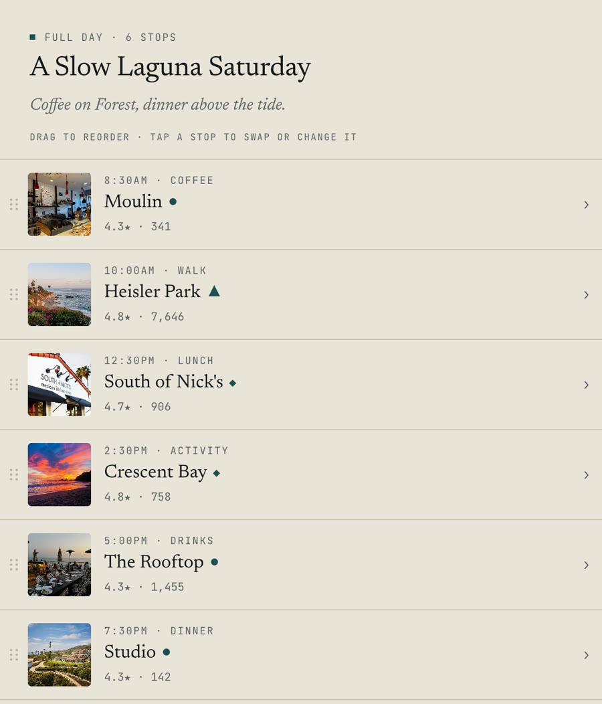

WikiSpeedrun
A browser game where players race each other through Wikipedia using only in-article links. Room-code lobbies with live position and timer sync, and three game modes. I built all of it: the server, the real-time layer, and the analytics stack behind it.
- players
- 50,000
- average engagement
- 13m 47s
- GitHub stars
- 160+


One race from Sushi to Lunar Roving Vehicle. The bar under the breadcrumbs places every player by how many clicks they are from the target, and the green edge is the finish. This race was staged on a local server for the recording: the host is a real browser and the three rivals are clients that join through the same API, every move follows a real link, and the server’s anti-cheat accepted all of them. The push-in on the bar was added after capture.
How that race was won
Every player starts on Sushi, three clicks from the target. The number after each article is how many clicks away it left them.
| Player | Click 1 | Click 2 | Click 3 | Click 4 | Finish |
|---|---|---|---|---|---|
| Henry | United States 2 | Space Race 1 | Lunar Roving Vehicle | Won in 3 clicks, 0:24 | |
| Maya | Japan | Space exploration 1 | Moon 2 | Apollo program 1 | 1 click short |
| Edward | Fish 3 | Human 2 | Moon 2 | 2 clicks short | |
| Jun | Rice 3 | Japan 2 | Tsunami 3 | 3 clicks short |
Outlined one click from the target.
Go wide first
The body of the Sushi article links to about 290 other articles, none of them near a lunar rover. United States links to more than 1,500. The first click buys reach: it took the winning route from three clicks out to two.
Read the distance
Maya was one click away on her second move. Space exploration links straight to Lunar Roving Vehicle, but she clicked Moon and fell back to two. The game shows that cost the moment a page loads, so a wrong turn is visible immediately.
Watch the bar
The bar shows every rival in clicks, not just who is ahead. A pill one click from the line means the next click can end the race. Maya was back at one click when the winning link was clicked.
How it’s built
- One process, one dependency
- The server is Node’s built-in
httpmodule, about 4,500 lines, and its only package is the Postgres driver. The client is a single 10,000-line HTML file. 218 commits so far. - Real time without WebSockets
- Server-Sent Events push room state to every player, and moves come back as ordinary POST requests. Each session carries a CSRF token and a reconnect token, so a dropped connection rejoins the same seat instead of leaving a ghost player in the room.
- Distance without a round trip
- When a race starts, the server maps the target’s neighbourhood: every article that links to it, then a sample of the articles that link to those. Each click is scored against those sets in memory, with a live lookup for anything the sample misses.
- A careful Wikipedia client
- Link and backlink lookups are cached for 24 hours, capped at 5,000 entries, and identical requests already in flight are merged, so ten rooms asking about the same article make one call.
- Moves are checked on the server
- A click only counts if the article is a real outgoing link of the player’s current page, with redirects resolved first. The check fails open on a Wikipedia error, and it ran in shadow mode, logging without blocking, before I turned enforcement on.
- Puzzles that can be won
- Pairs come from Wikipedia’s pageview data, but views don’t measure reachability: one trending article had 350,000 monthly views and three incoming links. A runtime check now rejects targets that too few pages link to, and production logs feed a blacklist.
-
First playable

- Shipped
Halfway Home
A two-player co-op survival game. You crash on a desert planet and get home by hauling the wreck back together one heavy part at a time, on a dwindling oxygen budget. Two players carry a single rigid body with physics replicated between them, which is the problem the rest of the game is built around.
Around that core: a predator that hunts whoever falls behind, base building, a rover, a fabricator, sandstorms, a map table that shows the planet as a hologram, and landmarks to discover. I am building it alone with an AI-assisted workflow: I write the design document for each system, Claude Code implements it through a bridge into the Unity editor, and I check the result with automated tests and a scripted second player that joins a real build.
- system design documents
- 21
- automated tests
- 517
- lighting moods
- 9
Three places in the current build. The Sky Arch is sited by its approach: the level tool searches the map for open ground with a clear 150 m path heading straight into the sun, so the arch first appears as a silhouette. The Deep Cut is a canyon whose walls put its floor in real shadow, lit from below by pulsing pools. At the Boneyard the predator comes out of the trees; its attacks are held off for this recording. All three are raw capture from the editor, with the long walks sped up.
The rover is a salvaged buggy built on its own physics: an 800 kg rigidbody on four raycast springs, all-wheel drive, no wheel colliders, and no automatic righting if you roll it. One player drives while the other works the winch. Cargo rides in the bed, where its weight sinks the suspension, or on a tow rope that drags, swings and can snap. The server runs the simulation and both screens follow it.
Hauling together. Each grip is a physics rope from a player's hand to the part, and the server simulates the load, so it drags and swings behind whoever is pulling. On the rover the driver tows while the passenger works the winch: here the cable pays out to its full 10 m and is reeled back in, turning red as it takes the strain. In both clips the second player is a separate copy of the game connected over the network.
Both screens at the same moment. Left is the host, right is the second player, each running their own copy of the game. Physics runs on the host and the other machine draws what it is sent, so both players see the same core, on the same ropes, in the same place. Each machine stamped its frames with the clock time, and the two recordings were lined up afterwards.
Building, finding your way, and leaving. Press B and pieces snap to a 5 m grid; the server checks each placement and takes the cost from what you are carrying. There is no minimap: the map is a hologram over a table at the wreck that rises to eye level when you read it, with pins for whatever the crew has found. Once the ship is whole both players vote to leave, every machine plays the same ending in step, and if you built a base the ending frames it.*
*For these recordings the hut was built by a script through the real build-mode input, the map was shown with everything already discovered, and the ship was set to ready so the ending could play without collecting the parts first.
How it’s built
- The host owns the physics
- My first networked test let each player own their own body, and the second player’s grip snapped as soon as they moved. So every rigid body now runs on the host. Each grip is a
ConfigurableJoint, so two players on one 107 kg battery are two springs pulling on the same body, and both screens show the host’s result. - Tested against a real second player
- A standalone build joins the editor as player two and plays from a script: hauling, installing a part together, driving, voting to leave. It also records screenshots and frame times from inside the build at the Steam Deck’s resolution. 517 automated tests sit underneath.
- Geometry built to the design document
- The art bible asks for an arch about 15 m across with 8 m of headroom, and for a deep zone whose floor never sees the sun. Both are procedural meshes generated to those numbers, and unit tests measure the result: the arch’s clearance, and how much floor a canyon wall shades at the game’s sun angle.
- A test setup that shipped
- To run two players on one machine, the host was locked to the keyboard and the second player to a gamepad and the arrow keys. That split was reaching builds, where a Steam Deck host couldn’t move. Builds now give every player every local device; the split only exists in the editor.
- Saves that know which crystal you took
- Gatherable nodes were saved under one name per type, so while any crystal survived a save, every crystal came back on load. Each node now saves under its own scene identity, and saves record a content version so newer content isn’t mistaken for something already gathered.
- When a partner drops
- A disconnected player’s body is held for 90 seconds in case they rejoin. The predator and wildlife freeze while the host waits, and if the partner doesn’t come back the host chooses to continue solo or save and quit. Before this, the body stayed forever, still holding whatever it carried.
- Prototype
- Systems pass
- Current build
Three points in development. The prototype took two days and answered one question, whether hauling a heavy crate together is fun, with two capsules on one keyboard and no netcode; it also settled the game’s gravity at 0.75 g. Then the networked systems pass, then art.
Tripreview
A travel web application built on a curated place database rather than scraped listings. I built the schema, the data pipeline, the type system and the front end, and designed the editorial system it is laid out in.
You pick a corner of Southern California on a map, say how long you have and what kind of day you want, and it plans the day from coffee to dinner in an order that keeps travel short, laid out like a magazine page you can share.
- curated places
- 1,108
- region guides
- 30


A generated trip and its stop list: each stop’s time, category, rating and tier, from coffee at 8:30am to dinner at 7:30pm. Stops can be dragged into a new order, or tapped to swap them or change their type.


Each stop says what to order and how far away the next one is. The site is designed for phones first, and every region has its own guide page written for search.
How it’s built
- Ratings you can compare
- Ratings go through a Bayesian average that treats every place as if it started with 100 reviews at 3.8 stars, so a 5.0 from six reviews can’t outrank a 4.7 from thousands. The same numbers sort places into tiers: a strong rating with under 100 reviews is a hidden gem, over 1,500 is a heavy hitter.
- A day that holds together
- Each trip length has a fixed shape: a full day is coffee, a walk, lunch, an activity, drinks and dinner. Each slot is a weighted draw on vibe match times rating to the power 2.5, halved for a place 3 km from the previous stop. Better places win more often, and regenerating still gives a different day.
- Drafted by a model, approved by me
- A discovery script finds well-rated places to fill gaps in each region, skipping anything already in the database by ID, by name, or by sitting within 70 m of one. Claude drafts each entry through a fixed schema, and every draft goes into a review file where I accept, edit or reject it before it is seeded.
- Photos picked by eye
- For every place the pipeline builds a contact sheet of up to six Google photos. I picked a calibration set of 14 by hand, the rest were picked to match and checked on a single review page, and the chosen three per place are resized and stored on Vercel Blob.
- A gate on the writing
- A script fails the launch if any copy a visitor can read contains an em dash or a word that reads as machine-written, like “delve”, “nestled” or “world-class”. It checks the source copy, the curated data files and the live database.
- An audit, then fixes
- A full product audit on 4 June scored the trip page 5 out of 10: the flagship trip had 18 stops and showed two coffees at 8:30am. The same day I trimmed it to a real six-stop day, made times follow each stop’s position, limited trips to the drawn area and built the two-column desktop layout.
VJ System
A real-time audio visualizer and VJ tool built in Unity for a brand IP launch, driving generative visuals from live audio input. I also built the node-based pipelines that produced the campaign footage and animated GIF pack, and directed and cut the campaign video.
Work in progress